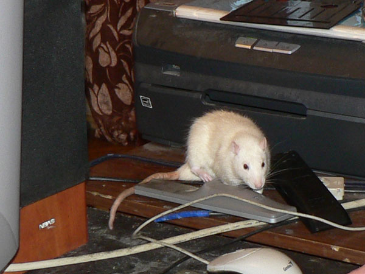
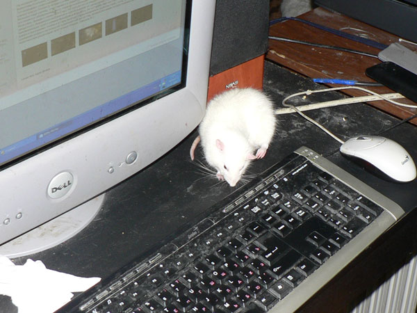
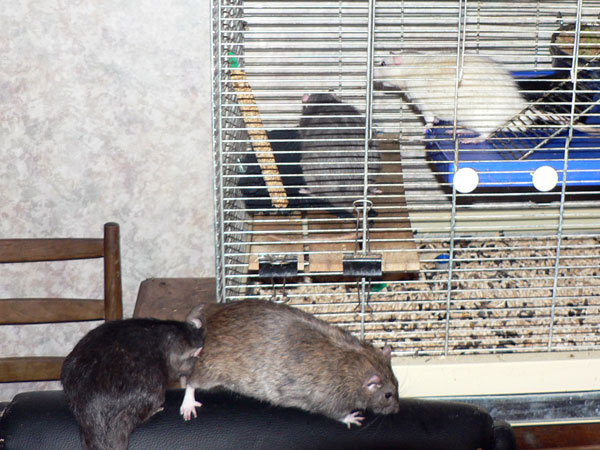
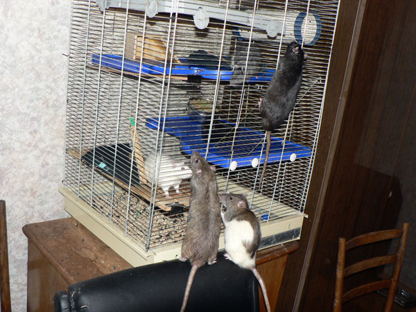
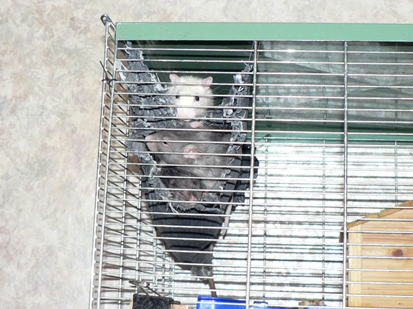

Январь 2009

Задрых в гамаке. Внизу —Нагваль Никодим, чуть выше — Дон Рэба, а сверху всех плющит Харитон.

Новенький: Гаврик Астартович Малышок. Около года,
а весит меньше полукило... Зоомаговский потому что.
Зато очень ласковый, лизучий и смирный — пару часов гулял возле компа, не убегая
на пол.



Даже подписи придумывать неохота к фото — и так
видно, какой замечательный крысик.
И как можно было такого выкидывать?!

Гаврик в клетке общается с Харитоном. Дон Рэба и Нагваль Никодим пришли посмотреть.

Продолжение.

Гаврик: — И с этими знакомиться?! Да у них тут
гнездо!
Дон Румата: — Благородный дон Рэба, это ваш знакомый?
Нагваль Никодим: — Там наверху еще дверь была, вдруг открыта...

Благородные доны и Никодим в карантинной клетке, чтобы не топотали по большой, пока там Гаврик знакомится с Харитоном и Сатиром.

Сатир и Харитон внутри гамака, Гаврик сверху.